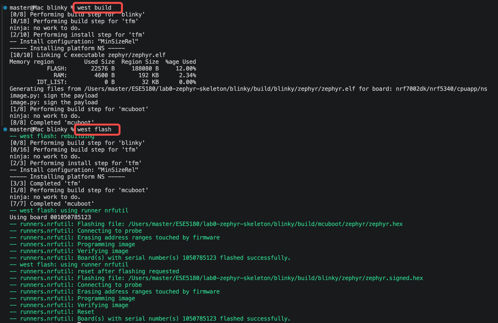
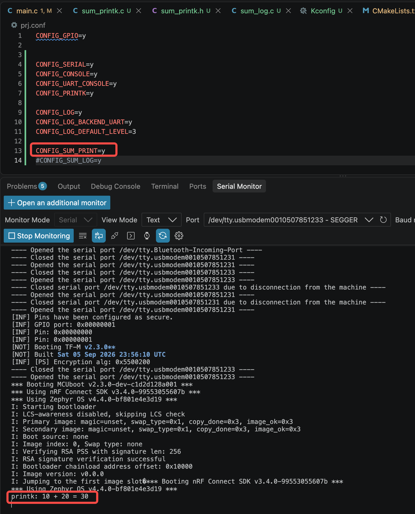
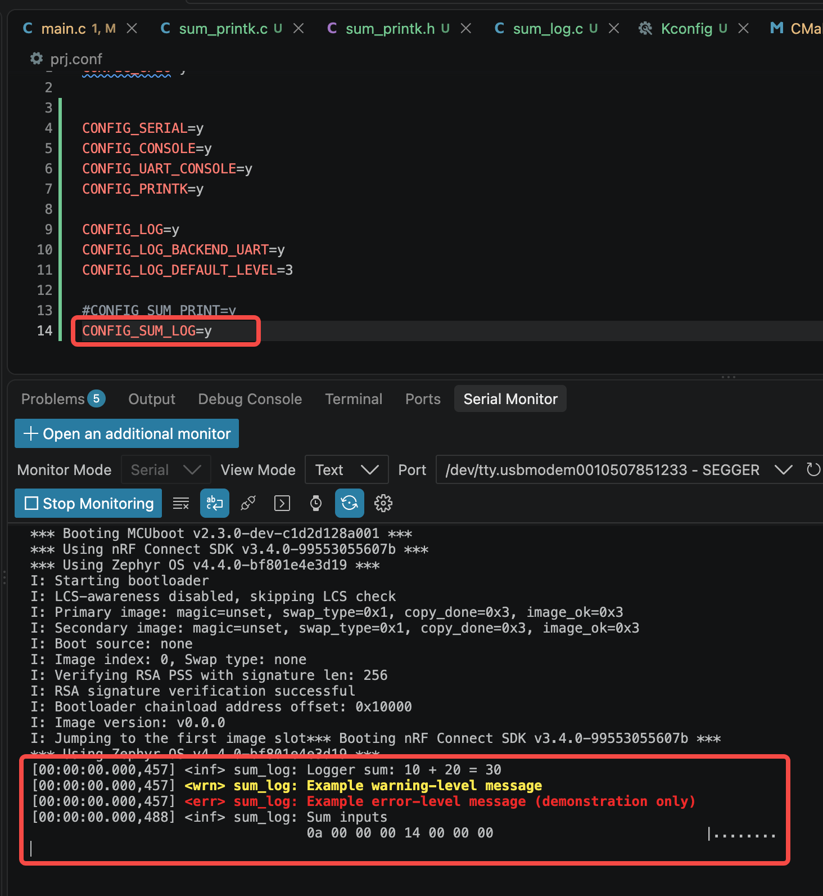
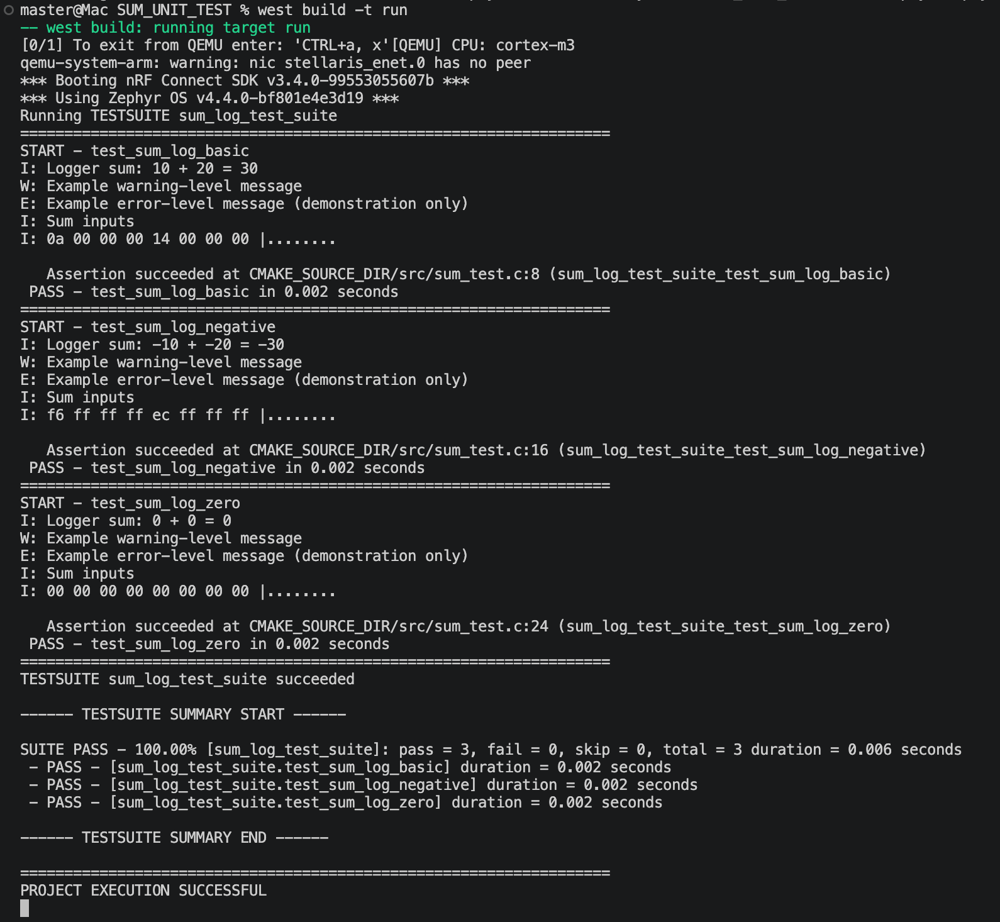
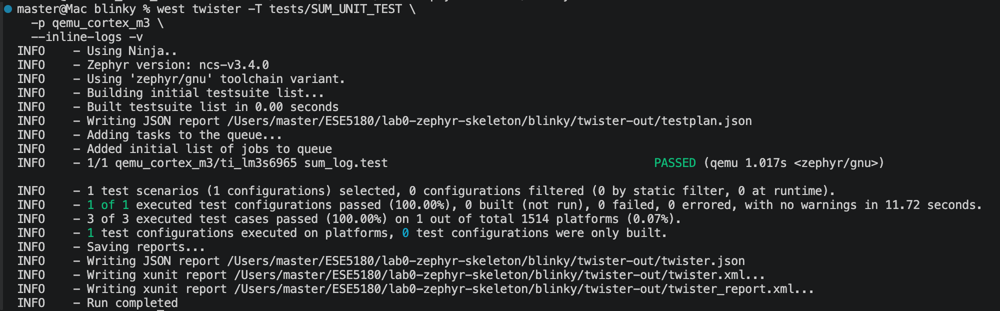
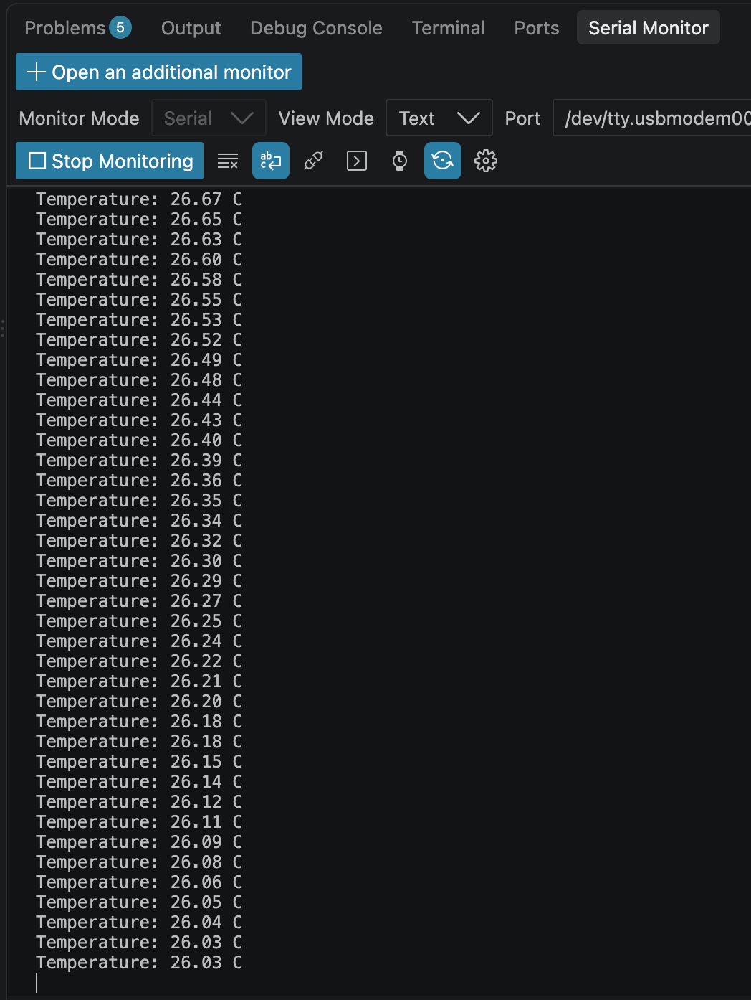
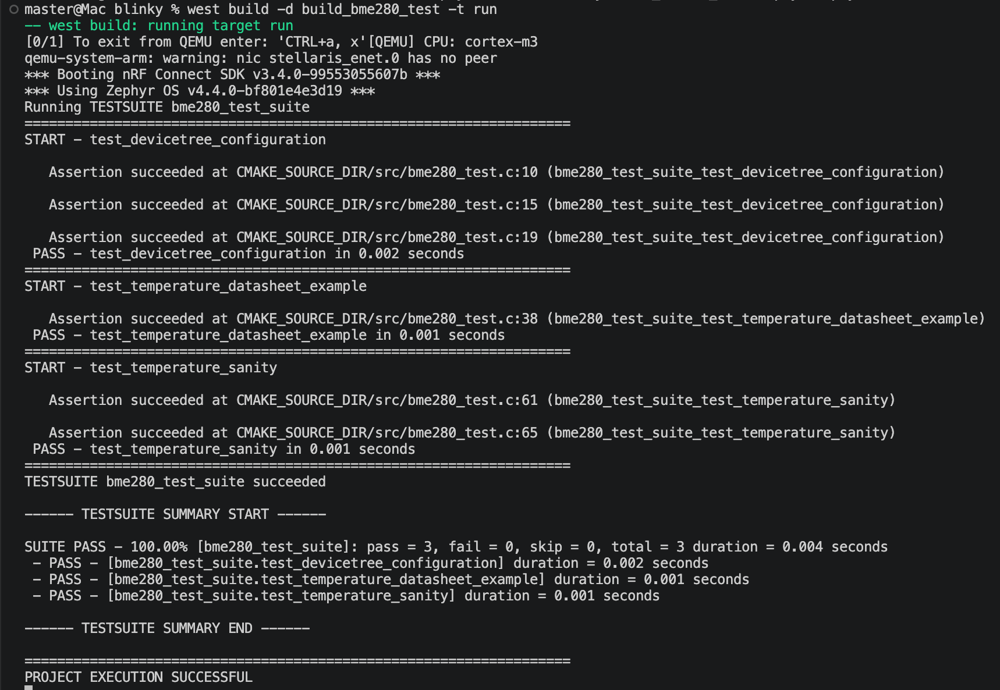

ESE5180: Lab 0 Zephyr
| Team Member Name |
Email Address |
| Weiye Zhai |
zhaiwy@engineering.upenn.edu |
GitHub Repository URL: https://github.com/master869/lab0-zephyr-master869.git
1. Hello (Vanilla) Zephyr
(1.1) Create a video showing blinky on all 3x MCU boards.
- In the video, show your terminal history of compiling and flashing for all 3x MCU boards.
- In the video, show each MCU board flashing its LED while running the blinky code.
- Name the video file: f26_lab0_1.1_pennkey
- Submit the video to this Google Form.
I have already submitted the video to the Google Form, and you can also watch it through this link
2. Hello (Nordic) Zephyr
(2.1) Commit your Zephyr application to your GitHub repository
Done
(2.2) Create a video showing the change in blinky behavior on the nRF7002DK
- In the video, show your terminal history within VS Code
- In the video, show the nRF7002DK board blinking at its original rate, then change the blinking time to 2 seconds, flash, and show the execution.
- Name the video file: f26_lab0_2.1_pennkey
- Submit the video to this Google Form.
I have already submitted the video to the Google Form, and you can also watch it through this link
3. Building with West
(3.1) Build and Flash using only west commands and not the GUI. Show the terminal prints by embedding a screenshot in your README.md.

4. Kconfig
5. Device Tree (DT)
(5.1) Switch out the blinking to LED2. Create an overlay file with your own alias named LED5180 that links to LED2 on the nRF7002 DK. Ensure you only call this alias in the main.c program. Commit your code to this GitHub Classroom repository.
Done
Done
(5.3) Create a new alias for your button and call your alias within your main.c. Commit these application changes to your GitHub repository.
Done
6. Printing vs. Logging
(6.1) Take screenshots of console output for both builds:
CONFIG_SUM_PRINT=y → result printed with printk().CONFIG_SUM_LOG=y → result printed with the Logger (include hexdump).
printk():

Logger:

(6.2) Make a short video showing hexdump, log, and printk.
- Name the video file: f26_lab0_6.2_pennkey
- Submit the video to this Google Form.
I have already submitted the video to the Google Form, and you can also watch it through this link
(6.3) Commit your updated Zephyr application to your GitHub repository
Done
7. Ztest for Unit Testing
(7.1) Implement the test case in “TO DO” to test your function. Commit your updated Zephyr application to your GitHub repository
Done
(7.2) Take screenshots of the testing outputs (laptop) in the terminal.
A: run in test directory (SUM_UNIT_TEST)

B: run in root directory (LAB_1)

8. Adding a Peripheral (BME280)
(8.1) Print out the temperature. Take screenshots of your logging output. Commit your Zephyr application to your GitHub repository.

(8.2) Create a Ztest to test if the device tree is set up and run sanity checks. Take and embed screenshots of your Ztest output for your README.md. Commit your Zephyr application to your GitHub repository.

9. Teaching Team Checkoff